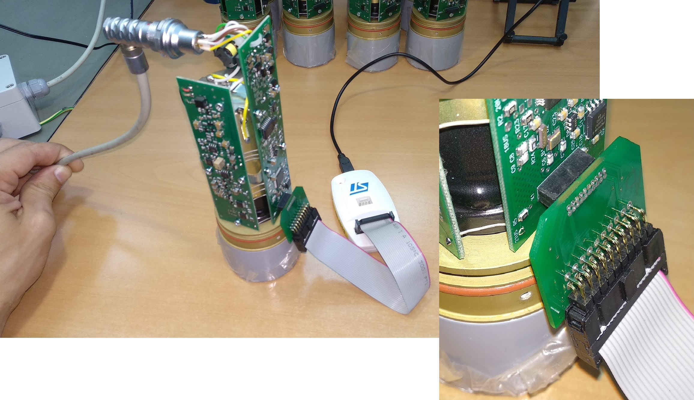
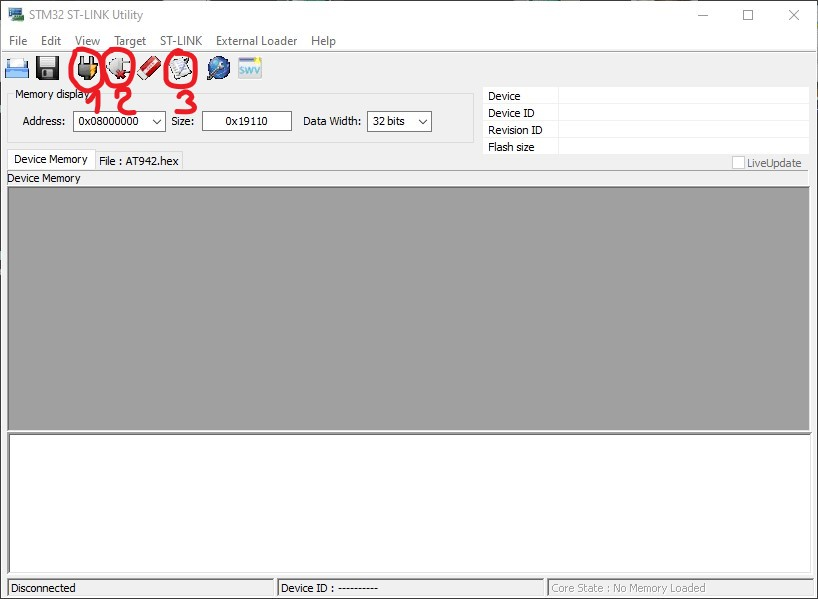
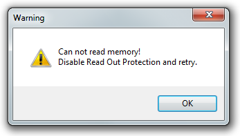
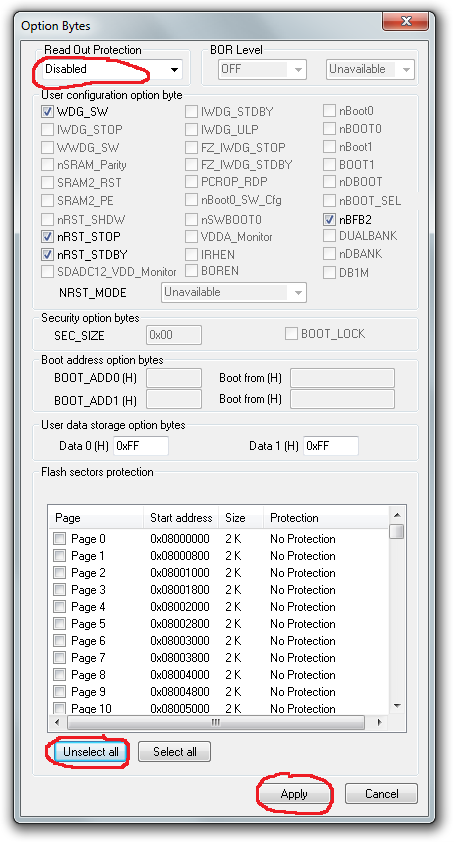
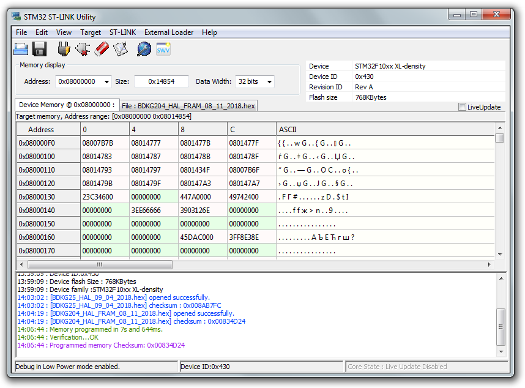
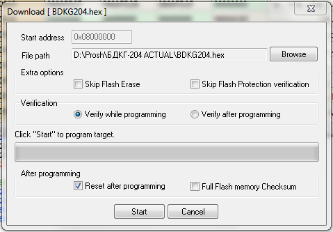
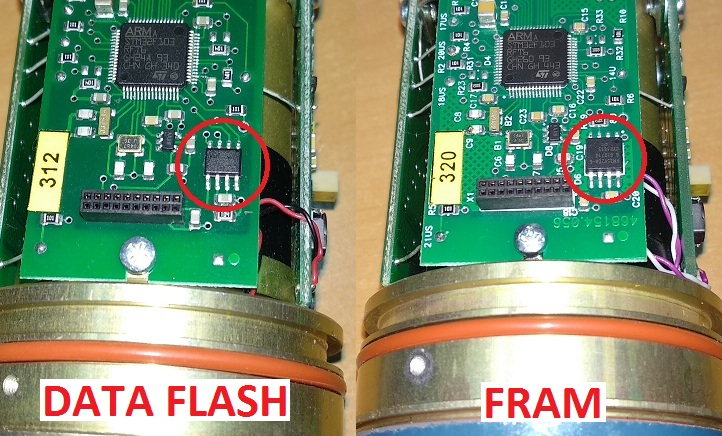

Подключить питание через ODU разъем → адаптер USB-RS485 (на этапе прошивки — как питание, на этапе проверки работы — как обмен). Номинальный рабочий ток потребления ≈ 80мА
Подключить программатор
Текущее подключение

Старое подключение
При подключении обращать внимание на расположение 1-ого вывода как при подключении к переходнику, так и при
подключении к плате обработки БД:
ПереходникПлата обработки БД
Запустить программу STM32 ST-Link Utility

Подключиться к микроконтроллеру с помощью кнопки подключения (1) или через вкладку Target → Connect.
При успешном подключении появиться вкладка «Device Memory» с пустыми ячейками (FFFFFFFF) для каждого адреса.
Если БД прошивался раннее, то появиться сообщение «Can not ready memory!» и не появиться вкладка «Device Memory» —
прошивка не может быть прочитана (включён бит защиты от чтения прошивки)
Если появляется окно с ошибкой: "Can not read memory!"
Если появляется такое окно с ошибкой:

Это значит, что устройство уже прошито, и прочитать или перезаписать прошивку нельзя. Чтобы убрать
защиту, необходимо сделать следующее (Внимание! Существующая прошивка будет стёрта!):
Target → Option Bytes

Readout Protection ⇒ Disabled
Flash Section Protection ⇒ Unselect All
Apply
Защита снята, прошивка стерта

Нажать кнопку программирования (3) или вкладку Target → Program & Verify. Появиться окно:

Выбрать прошивку (кнопка "Browse")
Есть два типа прошивки – для старых приборов с памятью DATA-FLASH, и для новых, с памятью FRAM.
Если прошить не той прошивкой, прибор либо не подключиться, либо подключиться, но не сможет сохранить ни одного
параметра (адрес, номер, пороги, коэффициенты и т.д.) и будет применять настройки по умолчанию (1-ый адрес, внутренний номер 0)

Нажать "Start"
Проверить корректность прошивки можно подключив БД к SARKtech с помощью адаптера USB-RS485, тип устройства — БДКГ-02.
Перед подключением обязательно отсоединить вилку ODU-7 от БД, затем программатор, после обратно подключить вилку ODU-7 к БД
После проверки наклеить на микроконтроллер наклейку с версией прошвики:
Удобнее всего прошивать следующим образом: открыть одновременно и STM32-Link и SARKtech и разместить оба
окна рядом. Прошить в STM, отключить-включить питание блока и сразу проверить в SARK, подключить
другой блок и т. д. Окна не закрывать.